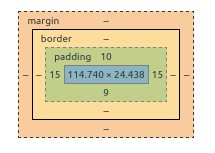

CSS
CSS
Cascading Style Sheets
Kieli web-sivun ulkoasun määrittämiseen
CSS:n avulla voidaan määritellä HTML-elementtien tyyli
- Väri
- Koko
- Sijainti
- Reunus
- Fontti
- Animaatio
- jne.
- jne.
CSS:n versiot
CSS 1
- Vuodelta 1996
CSS 2
- Vuodelta 1998
- Lisäsi uusia ominaisuuksia CSS 1:een
CSS 2.1
- Korjauksia CSS 2.1:een
- Viilattiin useita vuosia
- W3C Proposed Recommendation vuonna 2011
CSS 3
- Taaksepäin yhteensopiva
- Ei enää yhtä isoa spesifikaatiota vaan useita moduuleja
- Eri moduulit eri kypsyystasoilla
CSS-moduulit
CSS:n syntaksi
- CSS:ssä määritellään valitsin (selector) sekä tälle tyyliominaisuuksia
VALITSIN {
OMINAISUUS1: ARVO1;
OMINAISUUS2: ARVO2;
...
}Valitsimella määrätään mihin HTML-elementteihin tyylittely kohdistuu
Ominaisuus-arvo-pareilla puolestaan se mitä tyylejä asetetaan
Esim. kaikki
h1-otsikot oranssiksi
h1 {
color: orange;
}HTML ja CSS
HTML-dokumenttiin voidaan liittää tyylejä eri tavoin
Elementin
style-attribuutti:
<div style="background: yellow;"></div>style-elementti:
<style>
h1 {
color: #ABC;
}
</style>- Linkki erilliseen CSS-tiedostoon:
<link rel="stylesheet" href="./tyyli.css">Viimeksi mainittu tapa on yleensä suositelluin
Valitsimia
- Pelkkä HTML-elementin tyyppi kohdistaa tyylin kaikkiin kyseisen tyyppisiin elementteihin
div {
background: yellow;
}- Risuaita-valitsimella
#kohdistetaan elementtiin, jolla on määrättyid-attribuutti (esimerkissäid="otsikko1")
#otsikko1 {
font-size: 50px;
}- Piste-valitsimella tyyli puolestaan kohdistuu elementteihin, joilla on
kyseinen
class-attribuutti (esimerkissäclass="iso")
.iso {
height: 200px;
}Esimerkki
/* Valitsin: elementin tyyppi*/
p {
background-color: orange;
}
/* Valitsin: luokka (class) */
.moi {
color: red;
}
/* Valitsin: tunniste (id) */
#eka {
border: 1px solid black;
padding: 10px;
}<!DOCTYPE html>
<html lang="fi">
<head>
<meta charset="utf-8">
<title>Hello World</title>
<link rel="stylesheet"
type="text/css"
href="style.css" />
</head>
<body>
<h1 class="moi">Moi</h1>
<p id="eka">Eka!</p>
<p>Toka!</p>
</body>
</html>Valitsinten yhdistely
Valitsimia voidaan yhdistellä eri tavoin
Sama tyyli voidaan kohdistaa useampaan kohteeseen erottelemalla ne pilkuin
- Esim. kaikki
h1-,h2- jah3-otsikot lihavoituna:
- Esim. kaikki
h1, h2, h3 {
font-weight: bold;
}- Pisteellä yhdistelemällä voidaan puolestaan kohdistaa tyyli
elementteihin, joilla on kaikki mainitut
class-attribuutit- Esim. elementit joilla on sekä
classnimeltäisoettämusta
- Esim. elementit joilla on sekä
.iso.musta {
color: black;
margin: 10px;
}Jälkeläinen
Valitsimia voi kohdistaa myös sen perusteella mikä niiden sijainti on HTML-puussa
Välilyönnillä erottamalla kohdistetaan tyyli elementin jälkeläisiin (descendant)
- Esim. kaikki laatikon sisällä olevat
a-elementit:
- Esim. kaikki laatikon sisällä olevat
.laatikko a {
text-decoration: none;
}<div class="laatikko">
<a href=".">Valitsin osuu</a>
<p>
<a href=".">Osuu tähänkin</a>
</p>
</div>
<a href=".">Tähän ei osu</a>Suora lapsi
- Suurempi-kuin-merkillä
>kohdistuu tyyli tietyn elementin suoriin lapsiin (ei lapsenlapsiin)
.laatikko > a {
color: orange;
}<div class="laatikko">
<a href=".">Valitsin osuu</a>
<p>
<a href=".">Mutta tähän ei</a>
</p>
</div>
<a href=".">Tähän ei osu edelleenkään</a>Muita valitsimia
CSS-valtsimia on paljon muitakin
Palataan osaan niistä vielä myöhemmin
CSS-tyyliominaisuudet
Erilaisia tyyliominaisuuksiakin on CSS:ssä aika pitkä lista
Käydään läpi joitakin ->
color
Tekstin väri asetetaan
color-ominaisuudellaVäri voi olla
- joku nimetyistä väreistä, esim
red - heksa-arvo
#FF0000 - rgb-arvo
rgb(255, 0, 0)
- joku nimetyistä väreistä, esim
Värin läpinäkyvyys asetetaan
opacity-ominaisuudella [0-1]
p {
color: MediumSpringGreen;
opacity: 0.5;
}background
- Tausta asetetaan
background-ominaisuudella
body {
background: yellow;
}
.laatikko {
background: brown url("tausta.png") no-repeat fixed center;
}Lisäksi erikseen
background-color,background-imageym.
border
- Reunus asetetaan
border-ominaisuudella
table {
border: 1px solid black;
}Lisäksi erikseen
border-color,border-width, ym.
margin
- Elementin marginaali (etäisyys naapurista) asetetaan
margin-attribuutilla
div {
margin: 4px;
}
p {
margin: 0 0 5px 5px;
}Järjestys:
toprightbottomleftLisäksi erikseen
margin-left,margin-bottom, ym.

padding
paddingtaas on elementin reunan ja sen lapsien välinen etäisyys
div {
padding: 4px;
}
p {
padding: 0 0 5px 5px;
}Järjestys:
toprightbottomleftLisäksi erikseen
margin-left,margin-bottom, ym.
font
- Kirjasin asetetaan
font-ominaisuudella
p {
font: 15px arial, sans-serif;
}Lisäksi erikseen
font-size,font-family, ym.
display
Ominaisuus
displaymäärää miten elementti näytetäänJoitain mahdollisia
display:n arvoja:
| display | Selitys |
|---|---|
none |
Elementtiä ei näy |
inline |
Näytetään "inline" siinä kohdassa missä elementti on. Oletuksena useimmat elementit tällaisia. |
block |
Alkaa uudelta riviltä ja view kaiken tilan leveyssuunnassa. Mm. div ja p tällaisia oletuksena. |
position
Ominaisuus
positionmäärää miten elementin sijainti asetetaanJoitain mahdollisia
position:in arvoja:
| position | Selitys |
|---|---|
static |
Oletus. Elementit piirretään siinä järjestyksessä kun ne ovat dokumentissa. |
absolute |
Elementti sijoitetaan suhteessa ensimmäiseen sijoitettuun (positioned, ei-static) vanhempaansa. |
relative |
Elementti sijoitetaan suhteessa oletussijaintiinsa. |
fixed |
Elementti sijoitetaan suhteessa selainikkunaan. |
position-esimerkki
- Sijoitetaan
.laatikkoensimmäisen sijoitetun vanhempansa oikeaan reunaan, 10 pikselin päähän sen yläreunasta
.laatikko {
position: absolute;
top: 10px;
right: 0;
}- Sijoitetaan
.laatikko10 pikseliä oletussijainnistaan alas ja 10 pikseliä vasemmalle
.laatikko {
position: relative;
bottom: 10px;
left: 10px;
}CSS-tyylittelyä

Harjoitus
Liitä aiemmin luomaasi lomakkeeseen tyylitiedosto
Koristele lomakkeesi CSS-tyylein
Kaikki tyyliominaisuudet on listattu täällä
Responsiivisuus
Nykypäivänä web-sivuja luetaan hyvin erilaisilla laitteilla
Selainikkunan leveys voi vaihdella muutamasta sentistä kymmeniin sentteihin
Samanlainen layout ei sovi kaikille ruuduille
... vaan layoutin on oltava responsiivinen
float
- Yksi CSS:n ominaisuus jota responsiivisten layoutien teossa voidaan
hyödyntää on
float
div.leijuva {
float: left;
}float-ominaisuuden avulla elementtejä voidaan latoa vierekkäin niin paljon kuin ruudulle mahtuuLatominen voidaan aloittaa joko vasemmasta (
float: left) tai oikeasta reunasta (float: right)
Harjoitus
- Avaa tämä plunk: http://plnkr.co/edit/cvpHvwDM7PeoIu9YHN76
Se sisältää section -elementtejä, joille asetetaan CSS-tiedostossa float-ominaisuus.
Avaa esikatselu. Muuttele selainikkunan kokoa ja katso mitä tapahtuu.
Kokeile vaihtaa
float:n arvoksiright. Sekänone.Aseta jo(i)llekin
section-elementille tyyliominaisuus clear. Mitä tapahtuu?
section.pyyhkis {
clear: both;
}media-kyselyt
CSS3 toi responsiivisten layoutien tekoon uuden työkalun: media-kyselyt (media queries)
Sen avulla voidaan asettaa eri tyylejä sen mukaan minkälaisella laitteella web-sivu avataan
Esim. tyyli enintään 500 pikselin levyisille selainikkunoille (viewport)
@media only screen and (max-width: 500px) {
nav {
width: 100%;
}
}media-attribuutti
Eri laitteilla voidaan käyttää myös kokonaan eri CSS-tiedostoja
Tämä onnistuu HTML:n
link-elementinmedia-attribuutilla
<link rel="stylesheet"
media="screen and (min-width: 800px)"
href="normaali.css" />
<link rel="stylesheet"
media="screen and (max-width: 799px)"
href="mobiili.css" />
<link rel="stylesheet"
media="print"
href="tulostin.css" />bootstrap
Responsiivisten layouttien tekoa helpottamaan on erilaisia frameworkeja
Suosituin näistä on Bootstrap
Bootstrap-esimerkki-plunk: http://plnkr.co/edit/EA0Ah9h6Q3QQni3f9Lsr
Vielä valitsimista
Elementtejä voidaan tyylitellä myös niiden attribuuttien mukaan
Esim.
input-elementit joidentype=text
input[type=text] {
border: 1px solid black;
}Pseudo-luokat
CSS-tyylin voi asettaa myös elementin tilan perusteella
Elementeillä on automaattisesti erilaisia pseudo-luokkia (pseudo classes), joita voidaan tyylitellä kuten tavallisiakin luokkia
Syntaksi:
VALITSIN:PSEUDO-LUOKKAEsim.
a-elementin pseudo-luokatvisitedjahover:
a:visited {
color: #FFFF00;
}
a:hover {
color: white;
}Joitain pseudo-luokkia
p:first-child {
margin-left: 10px;
}
p:last-child {
margin-right: 10px;
}
p:nth-child(3) {
color: red;
}
a:before {
content: " (" attr(href) ")";
}
a:after {
content: "!";
}
section:empty {
background: red;
}CSS-valitsinten järjestys
- Useampi CSS-sääntö voi osua saman elementin samaan attribuuttiin, esim:
<p id="iidee" class="luokka">Moi</p>p { color: red; }
.luokka { color: green; }
#iidee { color: blue; }CSS määrittelee sääntöjen tärkeysjärjestyksen
- "Tarkin sääntö voittaa"
- Tasapelin sattuessa viimeiseksi määritelty voittaa
Tärkeysjärjestys voidaan kumota
!importantmääreellä
p { color: red !important; }Linkkejä
W3Schools CSS Reference ja CSS Selector Reference
Harjoitus
Avaa Plunker-projekti http://plnkr.co/edit/w2zAFt6gLzIqDpLpL0vE
Sen index.html sisältää kymmenen 3x5 kokoista taulukkoa (table).
Tyylit määritellään tiedostossa numerot.css.
- Muokkaa tyylitiedostoa
numerot.csssiten, että taulukoihin muodostuu numerot 1, 2, 3, 4, 5, ... Valmiina on kaksi ensimmäistä numeroa, joista voi ottaa mallia.